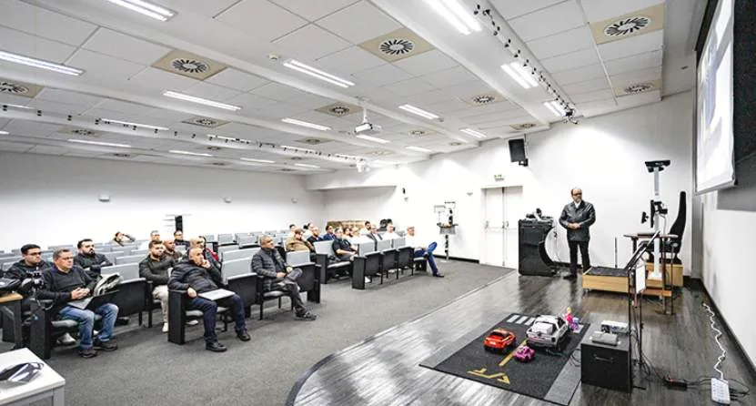
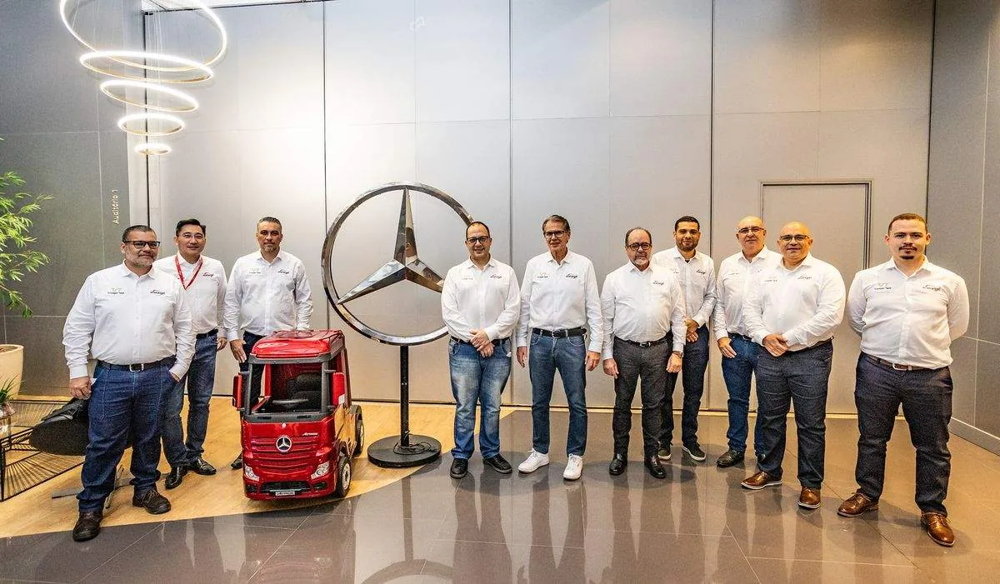
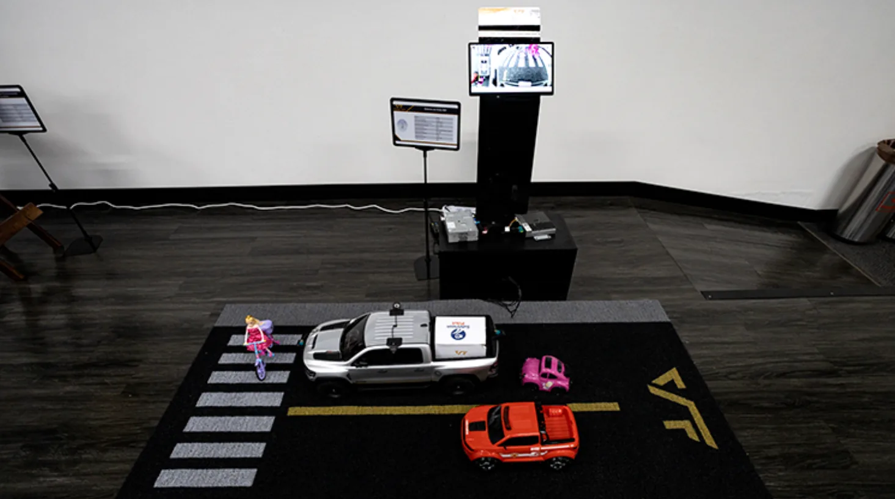

Voyager Intelligent Systems Limited made its debut at the Daimler Tech Exchange Day in Brazil, further deepening the Company’s market layout in South America and demonstrating strong technical capabilities in the global commercial-vehicle intelligent-upgrade track.

At this event, Voyager Intelligent Systems Limited exhibited a comprehensive portfolio of mature, mass-production-ready intelligent-driving solutions for commercial vehicles. Drawing on core technologies including VT-Sensing visual perception, VT-Navi inertial navigation positioning and VT-Vulcan® decision-making and control, the Company showcased its VT-CMS electronic mirror, VT-DMS driver monitoring, VT-AVM around-view parking and VT-FVC front-view-camera integrated ADAS solutions. These solutions are designed to meet the high safety standards applicable to commercial vehicles in South America and incorporate localized hardware and algorithm optimizations for high temperatures, long driving ranges and complex road conditions. The portfolio covers three major areas: first, proprietary core technologies for commercial-vehicle visual perception, decision-making and control; second, full-lifecycle localized support services and vehicle-matching application engineering expertise; and third, local industrial-chain collaboration and a long-term co-innovation model. Our highly flexible, customizable solutions can fully accommodate OEM requirements, regional localization adaptations and future industry regulatory trends.



